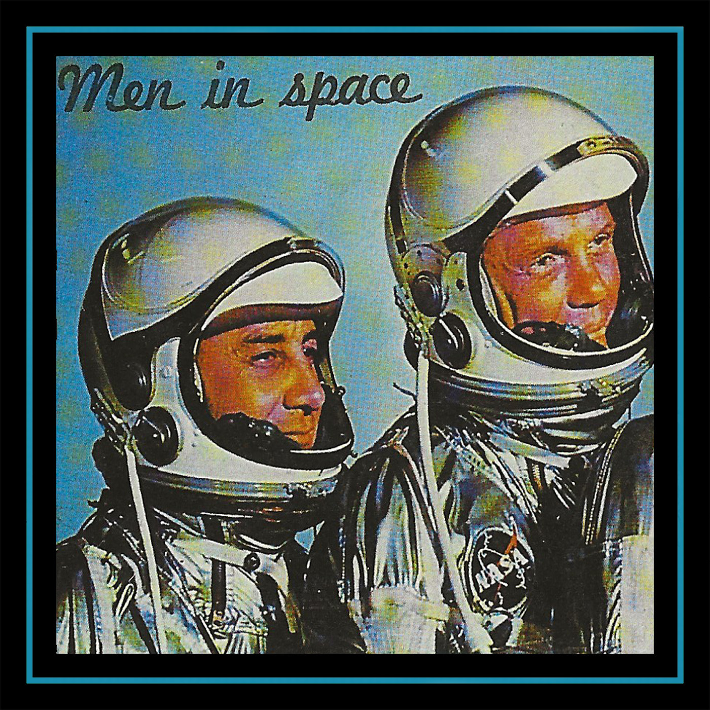

sciencevision - discography 2014-2015
catalog: ar-001
year: 2015
format: cassette
Sciencevision started in 2014 from a studio in the woods of Indiana, PA. This release captures the EPs and full length from the first year which moves between a post rock instrumental unit and a more abstract studio project. As mentioned in one of the band’s only interviews around this time, inspiration was taken from the intangible psychedelic properties of things like old science textbooks and obsolete computers. Limited to 15 copies.
1. earth
2. kindwords
3. psych ed
4. violet violence
5. everything under the same stars
6. town cop
7. the streets under the same lights
8. dream logic pts. i + ii
9. moments stretched across space
10. constellation you
11. clear black
12. ultraviolet spill
13. rain out of spite
14. murder dream
15. even less space
16. where i lived in a nightmare
17. to be
18. my tongue spills out
19. abstract driver
20. movingwhite
21. conscious movements in total dark
2. kindwords
3. psych ed
4. violet violence
5. everything under the same stars
6. town cop
7. the streets under the same lights
8. dream logic pts. i + ii
9. moments stretched across space
10. constellation you
11. clear black
12. ultraviolet spill
13. rain out of spite
14. murder dream
15. even less space
16. where i lived in a nightmare
17. to be
18. my tongue spills out
19. abstract driver
20. movingwhite
21. conscious movements in total dark
*** sold out ***